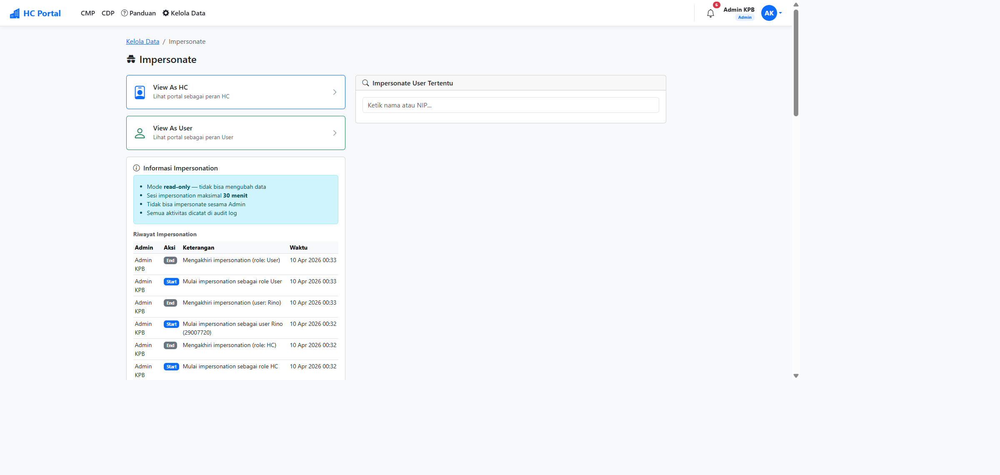
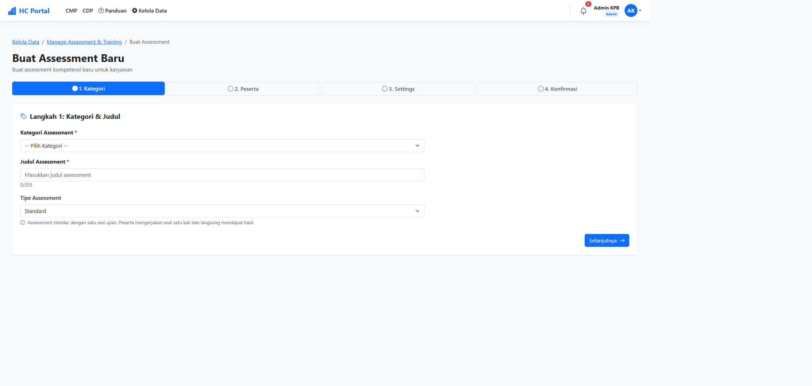
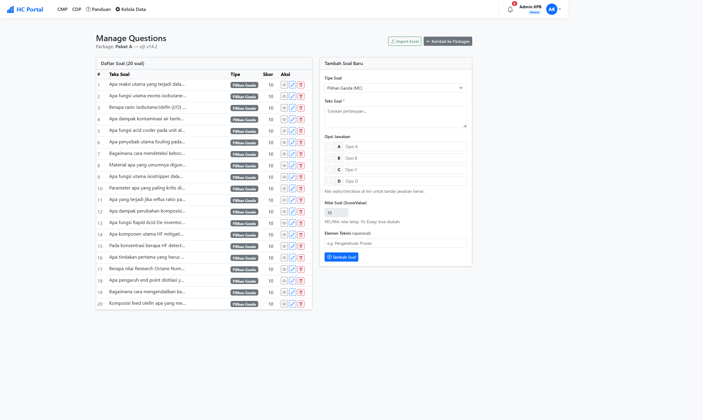

Seleksi teks dinonaktifkan pada area soal (CSS user-select: none)
Tombol navigasi, input jawaban, dan kontrol lainnya tetap berfungsi normal
Catatan
Perlindungan hanya aktif pada area soal & opsi jawaban. Area lain seperti tombol navigasi dan input jawaban essay tetap dapat digunakan secara normal.
2. Maintenance Mode
OperasionalAdminHC
Mode pemeliharaan sistem yang memungkinkan Admin menonaktifkan akses pengguna sementara — baik untuk keseluruhan sistem maupun modul tertentu.
Manfaat
Melakukan update atau migrasi data tanpa gangguan dari pengguna
Menampilkan pesan informatif kepada pengguna tentang estimasi waktu selesai
Dapat ditargetkan ke modul spesifik (CMP, CDP, Proton, dll.) tanpa mematikan seluruh sistem
Cara Kerja
Admin membuka menu Admin → Maintenance
Aktifkan maintenance dengan mengisi:
Pesan: Informasi yang ditampilkan ke pengguna
Estimasi Selesai: Waktu perkiraan maintenance berakhir
Scope: Pilih "Semua" atau modul tertentu (CMP, CDP, Proton, Admin, Home)
Klik Aktifkan — pengguna biasa akan melihat halaman maintenance
Admin & HC tetap dapat mengakses sistem selama maintenance aktif
Perhatian
Hanya role Admin yang dapat mengaktifkan/menonaktifkan maintenance mode. Role HC dapat mengakses sistem saat maintenance aktif, tetapi tidak dapat mengubah konfigurasi maintenance.
Fitur yang memungkinkan Admin untuk melihat sistem dari sudut pandang pengguna lain tanpa perlu mengetahui password mereka. Berguna untuk troubleshooting masalah yang dilaporkan pengguna.
Manfaat
Troubleshooting lebih cepat — lihat persis apa yang dilihat pengguna
Aman: mode read-only, tidak bisa mengubah data atas nama pengguna lain
Auto-expire setelah 30 menit untuk keamanan
Cara Kerja
Terdapat dua mode impersonation:
Mode
Keterangan
Kegunaan
Simulasi Role
Melihat sistem sebagai role tertentu (HC, Coach, dll.)
Verifikasi tampilan menu & akses per role
Simulasi User
Melihat sistem sebagai user spesifik
Troubleshoot masalah user tertentu
Buka menu Admin → Impersonate
Pilih mode: Simulasi Role atau Simulasi User
Banner kuning muncul di atas halaman menandakan mode aktif
Klik Stop Impersonation di banner untuk kembali ke akun Admin
Keamanan
Selama impersonation, semua aksi tulis (POST/PUT/DELETE) diblokir secara otomatis. Admin hanya dapat melihat data, tidak dapat mengubah apapun atas nama pengguna lain.

Halaman Impersonate — pilih mode View As HC, View As User, atau cari user spesifik
4. Tipe Assessment Pre-Post Test
AssessmentHC
Tipe assessment baru yang mengukur efektivitas training dengan membandingkan hasil Pre-Test (sebelum training) dan Post-Test (sesudah training) secara otomatis.
Manfaat
Mengukur dampak training secara kuantitatif
Sistem otomatis membuat dua sesi ujian (Pre & Post) dari satu kali setup
Terintegrasi dengan laporan Gain Score untuk analisis peningkatan per peserta
Cara Kerja
Buat assessment baru, pilih tipe Pre-Post Test
Sistem otomatis membuat dua session:
Pre-Test — diberikan sebelum training dimulai
Post-Test — diberikan setelah training selesai
Soal yang digunakan sama untuk kedua sesi
Hasil perbandingan dapat dilihat di menu Analytics → Gain Score
Terintegrasi
Data Pre-Post Test secara otomatis tersedia di laporan Gain Score (Fitur 7), menampilkan peningkatan skor per peserta dan per elemen teknis.

Form Buat Assessment — dropdown Tipe Assessment dengan pilihan Standard dan Pre-Post Test
5. Tipe Soal MC / MA / Essay
AssessmentHC
Dukungan tiga tipe soal dalam assessment untuk fleksibilitas evaluasi yang lebih lengkap.
Tipe Soal
Tipe
Keterangan
Penilaian
Multiple Choice (MC)
Pilihan ganda, satu jawaban benar. Peserta memilih dengan radio button.
Otomatis
Multiple Answer (MA)
Pilihan ganda, lebih dari satu jawaban benar. Label "Pilih semua yang benar" ditampilkan.
Otomatis
Essay
Jawaban uraian bebas dengan batas karakter (default 2000). Dilengkapi rubrik penilaian.
Manual oleh HC
Cara Kerja
Saat membuat soal di package, pilih Tipe Soal (MC/MA/Essay)
Untuk soal Essay, isi Rubrik Penilaian sebagai panduan scoring
Peserta melihat badge tipe soal saat mengerjakan ujian
Soal MC & MA dinilai otomatis; soal Essay perlu penilaian manual oleh HC
Character counter real-time ditampilkan untuk soal Essay
Info
Assessment yang mengandung soal Essay akan menampilkan indikator Essay Pending pada dashboard HC sampai semua jawaban essay dinilai.

Halaman Manage Questions — daftar soal dengan badge tipe, dan form Tambah Soal dengan dropdown Pilihan Ganda (MC) / Multiple Answer (MA) / Essay
6. Mobile Optimization Exam
UXSemua Peserta Ujian
Halaman ujian kini dioptimasi untuk perangkat mobile sehingga peserta dapat mengerjakan ujian dengan nyaman melalui smartphone.
Manfaat
Peserta dapat mengerjakan ujian kapan saja, di mana saja melalui HP
Navigasi soal mudah dijangkau dengan satu tangan (bottom navigation)
Layout responsif — otomatis menyesuaikan ukuran layar
Fitur Mobile
Sticky Footer Navigation: Tombol Previous, Next, Navigator, dan Submit selalu terlihat di bawah layar
Question Navigator Drawer: Panel geser untuk navigasi ke soal tertentu (offcanvas)